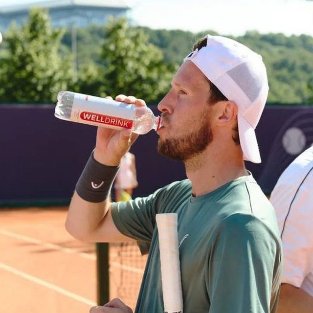

Александр Долгов
Основатель VEYRA. Помогаю предпринимателям и руководителям собирать собственные AI-системы вокруг реальных задач.
Главный вывод за пять лет работы со стартапами
Последние пять лет я строил Skipp — платформу найма разработчиков, через которую прошли сотни проектов. Я видел, как бизнес раз за разом приходит за результатом, а получает процесс. Подрядчики меняются, контекст теряется, каждый новый цикл начинается с «давайте ещё раз обсудим вводные».
Я думал, проблема в подрядчиках. Оказалось, проблема глубже — контекст негде держать.
Это наблюдение и привело меня к тому, чем я занимаюсь сейчас.
Каждый этап привёл к следующему
Стратегический консалтинг
Аналитическая поддержка проектных команд. Школа системного мышления: разбирать процессы на звенья, видеть узкие места, структурировать хаос в понятную логику действий.
Skyeng
Управляющий директор направления для государственного сектора. Масштабирование до ~120 млн руб./год. ПМЭФ, ВЭФ, контракты с крупными заказчиками. Главный урок: где знания не успевают передаваться, процессы держатся на людях, а операционная сложность мешает росту.
Skipp.dev — сооснователь
Платформа найма разработчиков. $1.6M инвестиций от Grishin Robotics и TiltTech Capital, ТОП-5 стартапов России по Inc. 2021, выручка ~150 млн руб./год, 5000+ разработчиков в экосистеме. Главный урок не в метриках: за пять лет я увидел сотни проектов изнутри и понял, что у большинства компаний просто нет среды, в которой контекст работы может накапливаться и переиспользоваться.
VEYRA — основатель
Голосовые AI-агенты для бизнеса. Начинал в сентябре 2025 года с простой гипотезы: если AI держит контекст лучше человека, многое в голосовых коммуникациях можно пересобрать. Через шесть месяцев — 12 клиентов и операционная модель, в которой один человек закрывает разработку, продажи, legal, контент и операции. Не потому что делаю чужую работу быстрее, а потому что большую часть делают системы, которые я настроил.
Долгов, Эй Ай и партнеры
Собственная практика, собранная из продуктового опыта, сотен просмотренных проектов и рабочего контура VEYRA. Из этого сложились персональные сессии для основателей и руководителей, которые хотят собрать такую же систему под себя — на своём материале.
Как я сам работаю с AI каждый день
Я не рассказываю про AI со стороны — я в нём работаю. Утро начинается с того, что один скилл собирает рекапы вчерашних встреч и обновляет CRM. Днём другой генерирует договор из шаблона, третий публикует материал в CMS. К вечеру backlog, decision log и session logs обновлены без моего участия.
Всё, что повторяется больше трёх раз, рано или поздно превращается в скилл или MCP-сервер. Это не дисциплина — это рациональная лень. Я предпочитаю один раз описать процесс правилами, чем выполнять его сто раз руками.
Не вдохновляю — собираю систему вместе с вами
Мне не интересно рассказывать, как AI изменит мир. Меня интересует конкретная задача конкретного человека: где он тратит время, что повторяется, что можно описать правилами и превратить в систему.
Формат персональных сессий работает как изучение языка с носителем. Не лекции, а практика на вашем материале. Каждая сессия — конкретный результат: рабочий сценарий, настроенный инструмент, документ с планом. Эффект от того, что заработало — лучшая мотивация продолжать.
Моя задача — сделать так, чтобы через несколько сессий я вам был не нужен. Показать подходы, отдать рабочие артефакты, собрать первую систему вместе. Дальше вы работаете самостоятельно — либо возвращаетесь за следующим уровнем, но не потому, что залипли.
Давайте разберём вашу задачу
Первая сессия — с гарантией. Если не видите ценности — не платите.